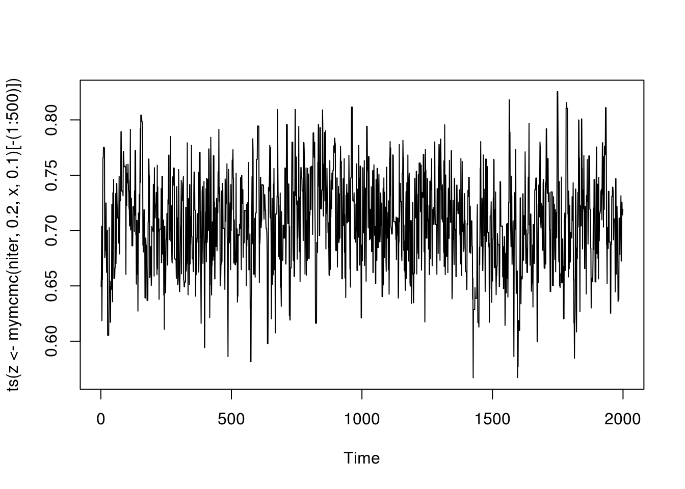
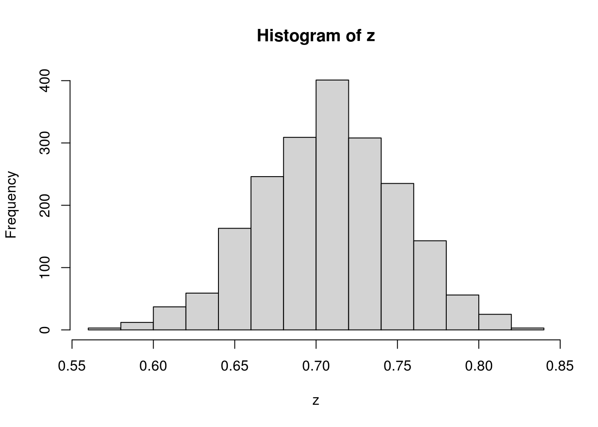
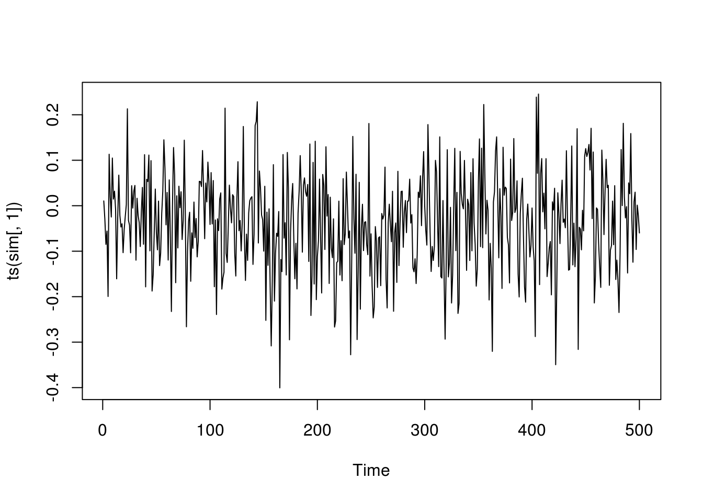
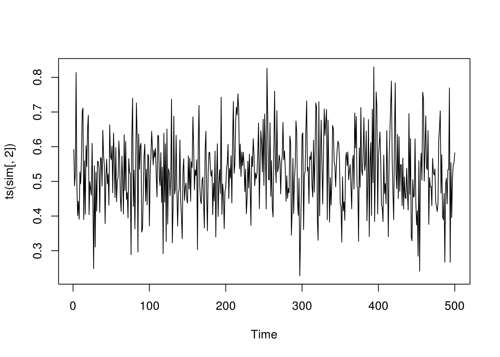

Chapter 6 Markov Chain Monte Carlo
6.1 Eample: Normal mixture
Generate some data with mixing rate \(\delta\).
delta <- 0.7 # true value to be estimated based on the data
n <- 100
set.seed(123)
u <- rbinom(n, prob = delta, size = 1)
x <- rnorm(n, ifelse(u == 1, 7, 10), 0.5)Assuming that the normal distribution parameters \(\mu_1\), \(\sigma_1^2\), \(\mu_2\), and \(\sigma_2^2\) are known. The only unknown parameter is \(\delta\). The likelihood function of \(\delta\) is
We impose an uninformative prior on \(\delta\) and use a simple random walk proposal to construct the Metropolis–Hasting algorithm.
## simple random walk chain
myRange <- function(v, width) {
min(1, v + width) - max(0, v - width)
}
mymcmc <- function(niter, init, x, width) {
v <- double(niter)
for (i in 1:niter) {
cand <- runif(1, max(0, init - width), min(1, init + width))
ratio <- mylike(cand, x) / myRange(cand, width) /
mylike(init, x) * myRange(init, width)
if (runif(1) < min(ratio, 1)) {
v[i] <- init <- cand
} else v[i] <- init
}
v
}With initial value \(\delta_0 = .2\) and stepsize \(.1\) in the random walk proposal, we run the 2500 iterations and throw away the first 500 iterations.


6.2 General-Purpose Gibbs Sampling with the ARMS
Consider an example of posterior inference. Suppose that \((Y_i, X_i)\), \(i = 1, \ldots, n\), are observed, where \[ Y_i \mid X_i \sim \mbox{Poisson}(\exp(a + b X_i)). \] This is a Poisson regression model. Assume independent prior distributions on \(a\) and \(b\) with \(N(0, \sigma^2)\) and \(N(0, \tau^2)\). The posterior density of \((a, b)\) is \[ q(a, b \mid \mbox{data}) \propto \exp\left(a \sum_i^n Y_i + b \sum_i^n X_i Y_i - e^a \sum_i^n e^{X_i b} - \frac{a^2}{2\sigma^2} - \frac{b^2}{2\tau^2}\right). \] The full conditional distributions of \(a\) and \(b\) can be shown to be log-concave, which allows adaptive rejection alogorithm (Robert and Casella 2004). One could also just use the general ARMS as a lazy man’s approach.
Let us first generate some data.
n <- 100
a <- 0.0; b <- 0.5
x <- rnorm(n)
y <- rpois(n, exp(a + b * x))
mydata <- data.frame(y = y, x = x)The posterior density up to an unknown normalizing constant can be easily computed.
logpost <- function(theta, data, sigma2, tau2) {
a <- theta[1]; b <- theta[2]
x <- data$x; y <- data$y
return(a * sum(y) + b * sum(x * y) - exp(a) * sum(exp(b * x))
- a^2 / 2 / sigma2 - b^2 / 2 / tau2)
}An MCMC based the Gibbs sampler uses the ARMS algorithm from R package HI.
mymcmc <- function(niter, thetaInit, data, sigma2, tau2, nburn= 100) {
p <- length(thetaInit)
thetaCurrent <- thetaInit
## define a function for full conditional sampling
logFC <- function(th, idx) {
theta <- thetaCurrent
theta[idx] <- th
logpost(theta, data, sigma2, tau2)
}
out <- matrix(thetaInit, niter, p, byrow = TRUE)
## Gibbs sampling
for (i in 2:niter) {
for (j in 1:p) {
## general-purpose arms algorithm
out[i, j] <- thetaCurrent[j] <-
HI::arms(thetaCurrent[j], logFC,
function(x, idx) ((x > -10) * (x < 10)),
1, idx = j)
}
}
out[-(1:nburn), ]
}Now give it a try with \(\sigma^2 = 100\) and \(\tau^2 = 100\).
niter <- 600; nburn <- 100
thetaInit <- c(2, 2)
sigma2 <- tau2 <- 100
sim <- mymcmc(niter, thetaInit, mydata, sigma2, tau2)
plot(ts(sim[,1]))

6.3 Exercises
6.3.1 Normal mixture revisited
Consider again the normal mixture example, except that the parameters of the normal distributions are considered unknown. Suppose that prior for \(\mu_1\) and \(\mu_2\) are \(N(0, 10^2)\), that the prior for \(1/\sigma_1^2\) and \(1/\sigma_2^2\) are \(\Gamma(a, b)\) with shape \(a = .5\) and scale \(b = 10\). Further, all the priors are independent. Design an MCMC using the Gibbs sampling approach to estimate all 5 parameters. You may use the arms()function in package HI. Run your chain for sufficiently long and drop the burn-in period. Plot the histogram of the results for all the parameters.
References
Robert, Christian, and George Casella. 2004. Monte Carlo Statistical Methods. Springer Science & Business Media.